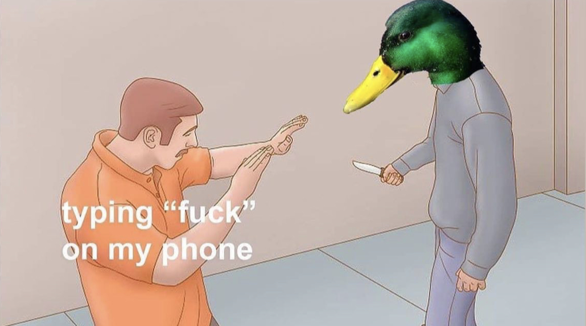
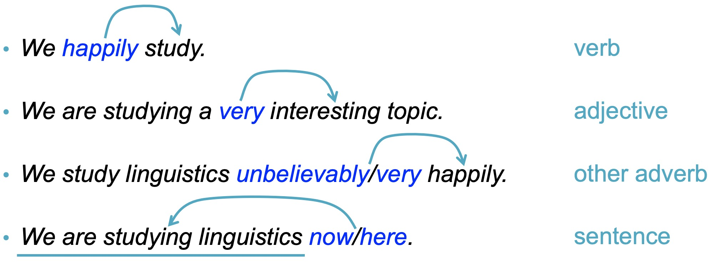

What is morphology?
What are words made of
Parts of Speech
New words
Word sense and Polysemy
They’re often made of smaller components
walk vs. walk-ed
brush vs. brush-ed
cat vs. cat-s
show vs. show-s
The recurring parts are morphemes
The smallest piece of a word which expresses a meaning or function
… and each morpheme’s meaning contributes to the word’s meaning!
played (play-ed)
cats (cat-s)
blacken (black-en)
unroll (un-roll)
older (old-er)
Can stand on their own, do not have to attach to some other form
Cat, Show, Class, Panda, Walk, Purple
Can’t stand on their own, must be attached to some other morpheme
Prefixes - Go before the root
Suffixes - Go after the root
There are other kinds, but that’s LIGN 120 material!
Morphology makes the same thing show up in different forms
“You walk”, “She walks”, “Marie walked”, “San is walking”, “Frank’s a walker”, but “I took three walks”
“Three cats”, “One cat”, “cat-like reflexes”, “catnap”, but “catastrophe”
“I see”, “She sees.”, “I saw the mountain”, but “I saw the log in half”
‘Let’s just delete characters from words until all the forms of the word have the same form’
Will not capture ‘see’ vs. ‘saw’ vs. ‘sawed’ or ‘try’ vs. ‘tried’
Does not understand that ‘I saw her’ is a different word than ‘I bought a saw’
Stemming is dumb. It just removes letters according to rules
’Let’s examine this word, look at the many morphological forms it can have, and figure out which lemma it’s a form of.
Lemmatization requires knowledge of individual words and their forms
Lemmatization is much more accurate than stemming
Lemmatization is much slower, and requires other resources (like WordNet)
“takes” and “took” and “take” are all semantically the same
“How long would it take to walk to work?” vs. “How long would walking to work take?”
There are many, many kinds of morphemes
Accomplishing many tasks
… and they’re the building blocks of words
Sometimes just one, sometimes many
… but once constructed, words have many different types
Also known as “Parts of Speech”
The types of words which occur in language
Nouns: bike, car, cat, dog, tofu, dude, bling
Verbs: go, eat, talk, walk, yeet
Adjectives: lit, sweet, hot, cool, awesome
Adverbs: well, fast, slowly, easily
Pre/postpositions: with, from, on, in
Determiners: the, a, that, this, those
Pronouns: she, he, him, her, it, I, you, they
Conjunctions: and, or, whenever, while
Numeral: one, twice, third
Interjection: ouch, tsk, damnit!
Describe a person, place or thing
Can be singular or plural
Can be paired with a determiner (e.g. “I like the/a…”)
I like the book/car/cat/show
Can take tense marking in English
Can work with modals
Comparative Constructions
Superlative Constructions
Very/too Constructions
Words can be used as other categories
“You look very… linguist today”
“That’s pretty fly”
“I can’t adult right now”
Words that don’t fit the pattern
“the most nebulous and puzzling of the traditional word classes”
They can modify anything non-nominal

Temporal: Now, then, yesterday, always, tomorrow, next week
Locative: Here, there, abroad
Sentence: Perhaps, fortunately, honestly, frankly
Manner: Quickly, carefully, excitedly, beautifully
Linking: Therefore, thus, consequently
Degree: Very, too, extremely
Indicate a semantic relationship between other entities
“Any relationship a squirrel can have with a tree”
Under, around, on top of, behind, near, adjacent to, below, above, in, on…
These don’t change form in English
Substitute for noun phrases
“I saw the gal who Kati noticed was carrying a hamster in her backpack”
“I saw her”
Personal Pronouns
Indefinite Pronouns
Interrogative Pronouns
Relative pronouns
Demonstrative pronouns
Determiners mark and precede nouns
The/an interesting book
Those cookies
Which movie did you see?
Determiners don’t vary in form
Possessive: My, your, her, our, his, its, their
Demonstrative: This, these, that, those
Interrogative: which, what, whose
Definite: the
Indefinite: a/an
Used to link expressions
Sunny and warm
Red or blue?
He rolled over while I was petting him.
Although the lines between them can be blurrier or cleaner
… and some languages don’t necessarily use all of them
Nouns, Verbs, Adjectives, Adverbs are content words
Pre/Postpositions, Determiners, Pronouns, Conjunctions are function words
We very rarely gain new Function words (Pre/Postpositions, Determiners, Pronouns, Conjunctions)
We often gain new Content words (Nouns, Verbs, Adjectives, Adverbs)
Function words are a closed class, and content words are an open class
“I didn’t see The Island because Michael Bay” (new preposition)
“I spent last night in the library doing homework slash looking at pictures of cats” (new conjunction)
Simp (Noun/Verb)
Poggers (Adjective)
Mid (Adjective)
Totes (Adverb)
uwu (Interjection)
Flex
Diamond Hands
Tea
Drop
Slay
Facts/Fax
Words can have different ‘senses’ which are different parts of speech
These are classically called ‘Homonyms’
A word which shares the same spoken and written forms, but has a different meaning
e.g. Bank (river)/Bank (institution), Mug (coffee)/Mug (street robbery), Phone (iPhone)/Phone ([t] or [ŋ])
This is different from homophones (e.g. “banned/band”) because the spelling is the same
This brings up a problem that will haunt us throughout the quarter
The fact that one word can have many different meanings
The specific meaning of a word being used in a given situation
She fit the package into the over-full trunk
She’s fit to work on your project, given her background
She’s having fits about the new deadline
She’s quite fit for her age
That fit nicely into my schedule
She fits in well in San Diego
Damn, he’s fit
What about when words have different meanings in conjunction?
“bread chasing”
“shut down” (vs. “shut up”, “shut out”, “shut in”…)
“thank u, next.”
“on the down low”
“down bad”
When a group of words combine to have a meaning different from their compositional sum
Similar to an ‘idiom’, but less rigidly defined.
These present huge problems for NLP
“I got down low to pet the puppy” vs. “Let’s keep this on the down low”
… and many different meanings indistinguishable by form
… and combinations of words can mean something different too
… and none of this can be discovered from written form alone
(Nah, it’s OK, we’ve got syntax)
Many words are made of smaller component morphemes
We need to consider many forms of words, and unite them
Words are of many different types or ‘Parts of speech’
New words are a regular occurrence
… and individual words can mean many different things